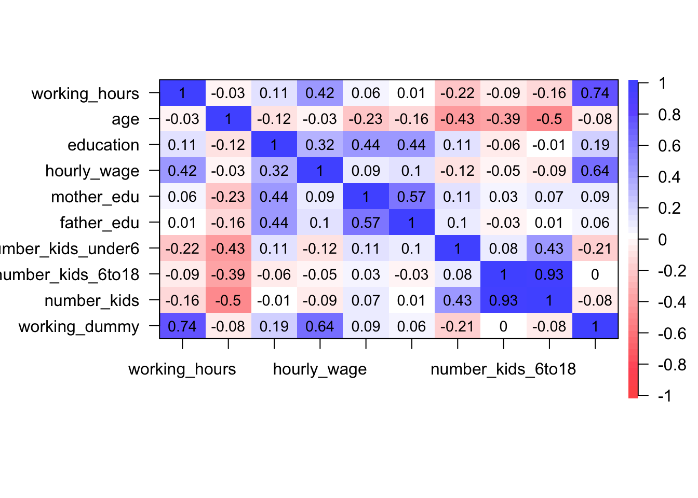

Rで計量経済学
Last Update: 02/11/2021
Chapter 1 回帰分析
1.1 検証する仮説
「教育年数が増えると,賃金は増加するのでは?」という仮説を検証していきます。
1.2 データの読み込み
データを読み込む際はread.csv()関数を使います。()の中で読み込みたいデータがあるファイル名を指定してます。このコードの場合、カレントディレクトリの中のdataというフォルダ内にあるデータfemale_labor.csvを読み込むという操作をしています。Rのディレクトリ関連の話はここに詳しくまとまっています。そもそもディレクトリってなんやねんと感じている方はこちらを参照してください。
head()関数でデータの先頭6行を出力することが出来ます。反対に、tail()とすると後ろから6行を出力出来ます
## working_hours age education hourly_wage mother_edu
## 1 4950 35 12 0.1616 10
## 2 4210 46 12 2.3753 3
## 3 3686 32 14 0.5426 12
## 4 3640 58 12 1.0989 7
## 5 3533 38 15 5.0948 12
## 6 3225 54 16 3.0416 12
## father_edu number_kids_under6 number_kids_6to18
## 1 10 0 2
## 2 3 0 0
## 3 12 0 0
## 4 3 0 0
## 5 7 2 2
## 6 12 0 0○変数の説明
| 変数名 | 説明 |
|---|---|
| working_hous | 労働時間 |
| age | 年齢 |
| education | 教育年数 |
| hourly_wage | 時給（ドル） |
| mother_edu | 母親の教育年数 |
| father_edu | 父親の教育年数 |
| number_kids_under6 | 6才未満の子供の数 |
| number_kids_6to18 | 6〜18才の子供の数 |
1.3 データの把握
1.3.1 ヒストグラム
分析に入る前にデータを可視化していきます。1つの変数の分布を把握する時にはhist()を使います。()内でデータの指定をします。今回はdfという名前のデータのeducationという変数のヒストグラムを出力しています。


1.3.3 基本統計量
データの傾向を統計学で学んだ指標で理解してみましょう。summary()関数を使うと、()内で指定したデータの各変数について基本統計量を出力してくれます。NA'sは欠損値の個数を示しています。欠損値は数値が入ってない、不明な値のことです。
## working_hours age education
## Min. : 0.0 Min. :30.00 Min. : 5.00
## 1st Qu.: 0.0 1st Qu.:36.00 1st Qu.:12.00
## Median : 288.0 Median :43.00 Median :12.00
## Mean : 740.6 Mean :42.54 Mean :12.29
## 3rd Qu.:1516.0 3rd Qu.:49.00 3rd Qu.:13.00
## Max. :4950.0 Max. :60.00 Max. :17.00
##
## hourly_wage mother_edu father_edu
## Min. : 0.000 Min. : 3.000 Min. : 3.000
## 1st Qu.: 0.000 1st Qu.: 7.000 1st Qu.: 7.000
## Median : 1.625 Median :10.000 Median : 7.000
## Mean : 2.375 Mean : 9.414 Mean : 8.988
## 3rd Qu.: 3.788 3rd Qu.:12.000 3rd Qu.:12.000
## Max. :25.000 Max. :17.000 Max. :17.000
## NA's :13 NA's :15
## number_kids_under6 number_kids_6to18
## Min. :0.0000 Min. :0.000
## 1st Qu.:0.0000 1st Qu.:0.000
## Median :0.0000 Median :1.000
## Mean :0.2377 Mean :1.353
## 3rd Qu.:0.0000 3rd Qu.:2.000
## Max. :3.0000 Max. :8.000
## 1.4 単回帰分析
1.4.1 計量経済学モデル
\[ hourly\_wage_{i} = \alpha + \beta\times education_{i} + u_{i} \]
1.4.2 推定
回帰分析をする際には、lm(被説明変数 ~ 説明変数, data = データの名前)関数を使います。()内で①回帰式と②使用するデータの2つを指定します。このコードだと、結果はout_simple_regressというオブジェクトに保存されます。
1.4.3 解釈
回帰分析の結果はsummary()関数で確認することができます。()内に分析結果のオブジェクトを入れます。
##
## Call:
## lm(formula = hourly_wage ~ education, data = df)
##
## Residuals:
## Min 1Q Median 3Q Max
## -4.5079 -2.2447 -0.4342 1.3737 22.7553
##
## Coefficients:
## Estimate Std. Error t value Pr(>|t|)
## (Intercept) -3.18694 0.61456 -5.186 2.77e-07 ***
## education 0.45264 0.04918 9.204 < 2e-16 ***
## ---
## Signif. codes:
## 0 '***' 0.001 '**' 0.01 '*' 0.05 '.' 0.1 ' ' 1
##
## Residual standard error: 3.075 on 751 degrees of freedom
## Multiple R-squared: 0.1014, Adjusted R-squared: 0.1002
## F-statistic: 84.71 on 1 and 751 DF, p-value: < 2.2e-16先ほどの散布図に推定した回帰式をくっつけてみましょう。図に線を足す時にはabline()関数を使います。今回はcol="blue"で直線の色を青色に指定しました。推定結果のeducationのEstimateが推定されたパラメータ\(\alpha\)の値を示しています。0.45264と正の値なので、右肩上がりの直線になりそうですね。

1.5 重回帰分析
1.5.1 計量経済学モデル
次に、説明変数が2つ以上ある回帰モデル、重回帰分析を扱います。想定する回帰式は以下の通りです。 \[ hourly\_wage_{i} = \alpha + \beta_{1}\times education_{i}+ \beta_{2}\times age_{i} + \beta_{3}\times working\_dummy_{i} + \beta_{4}\times mother\_edu_{i} + \beta_{5}\times father\_edu_{i} + \beta_{6}\times number\_kids_{i}+ u_{i} \]
1.5.2 データの加工: 新規変数作成
18才以下の子供の数を示すnumber_kidsという変数を作成してみましょう。number_kids_under6とnumber_kids_6to18の和がこの値になります。<-は代入を示しています。つまり、number_kidsという変数はnumber_kids_under6+number_kids_6to18で得られる結果を代入した値となります。head()関数で出力したデータをみて、正しく作られているか確認しましょう。
## working_hours age education hourly_wage mother_edu
## 1 4950 35 12 0.1616 10
## 2 4210 46 12 2.3753 3
## 3 3686 32 14 0.5426 12
## 4 3640 58 12 1.0989 7
## 5 3533 38 15 5.0948 12
## 6 3225 54 16 3.0416 12
## father_edu number_kids_under6 number_kids_6to18
## 1 10 0 2
## 2 3 0 0
## 3 12 0 0
## 4 3 0 0
## 5 7 2 2
## 6 12 0 0
## number_kids
## 1 2
## 2 0
## 3 0
## 4 0
## 5 4
## 6 01.5.3 データの加工: 欠損値の処理
最初の方でデータの基本統計量を確認した際にmother_eduとfather_eduに欠損値NAがありました。今回はこのNAを埋めてみましょう。今回は欠損している箇所は0、つまり教育を受けていない人と解釈します。欠損値を処理する際には、欠損していることに意味があるのかどうか？をしっかり考えてください。
1.5.4 データの加工: ダミー変数
ダミー変数とは、ある条件を満たしたら1をそれ以外であれば0の2値だけをとる変数のことです。今回はworking_dummyという働いているかいないかを示すダミー変数を作ってみます。ifelse(条件, 条件に合う場合, 合わない場合)関数を使うと簡単に作ることが出来ます。今回はworking_hours>0を条件として、これを満たせば1を満たさなければ0を取るとしています。
1.5.5 推定
重回帰分析も同様にlm()関数を使います。説明変数を+で繋げていきます。
1.5.6 解釈
これも単回帰と同様にsummary関数です。
##
## Call:
## lm(formula = hourly_wage ~ education + age + working_dummy +
## mother_edu + father_edu + number_kids, data = df)
##
## Residuals:
## Min 1Q Median 3Q Max
## -4.9952 -1.1097 -0.1540 0.4855 21.3594
##
## Coefficients:
## Estimate Std. Error t value Pr(>|t|)
## (Intercept) -3.573959 0.851078 -4.199 3.00e-05 ***
## education 0.333712 0.044951 7.424 3.11e-13 ***
## age 0.006085 0.013058 0.466 0.6414
## working_dummy 3.921522 0.182158 21.528 < 2e-16 ***
## mother_edu -0.056667 0.033289 -1.702 0.0891 .
## father_edu -0.003238 0.031124 -0.104 0.9172
## number_kids -0.054553 0.070483 -0.774 0.4392
## ---
## Signif. codes:
## 0 '***' 0.001 '**' 0.01 '*' 0.05 '.' 0.1 ' ' 1
##
## Residual standard error: 2.406 on 746 degrees of freedom
## Multiple R-squared: 0.4536, Adjusted R-squared: 0.4492
## F-statistic: 103.2 on 6 and 746 DF, p-value: < 2.2e-16- lm(formula = hourly_wage ~ education, data = df): 回帰式を再掲しています。
- Residuals: 誤差項 \(u_i\)の分布
- Coefficients:
- Estimate: パラメータ$, _1,_2, ,_6 $の値
- Std. Error: 標準誤差
- t value: t値
- Pr(>|t|): p値, 0~0.001の間なら
***, 0.001~0.01の間なら**, 0.01~0.05の間なら*が付きます。
- Multiple R-squared: 決定係数の値です。重回帰分析の場合はAdjusted R-squared（自由度調整済み決定係数）をみます。
- F-statistic: F値
このようにパラメータの値だけを取り出すことも出来ます。
## (Intercept) education age working_dummy
## -3.573959289 0.333711958 0.006084630 3.921521509
## mother_edu father_edu number_kids
## -0.056666781 -0.003237767 -0.0545534911.6 捕捉：多重共線性
1.6.1 相関係数
説明変数間で強い相関がみられると、パラメータの推定値にバイアスがかかってしまいます。そのため、重回帰分析の前に説明変数間での相関係数をチェックすることが望ましいです。cor()関数で相関係数を出力することが出来ます。
## working_hours age education
## working_hours 1.00000000 -0.03311418 0.10596042
## age -0.03311418 1.00000000 -0.12022299
## education 0.10596042 -0.12022299 1.00000000
## hourly_wage 0.42294447 -0.03455914 0.31837807
## mother_edu 0.05786375 -0.23464156 0.43533650
## father_edu 0.01367090 -0.16059085 0.44245823
## number_kids_under6 -0.22206330 -0.43394869 0.10869022
## number_kids_6to18 -0.09063207 -0.38541134 -0.05889891
## number_kids -0.16157352 -0.50398872 -0.01423498
## working_dummy 0.74114539 -0.08049811 0.18735285
## hourly_wage mother_edu father_edu
## working_hours 0.42294447 0.05786375 0.01367090
## age -0.03455914 -0.23464156 -0.16059085
## education 0.31837807 0.43533650 0.44245823
## hourly_wage 1.00000000 0.09030522 0.09847684
## mother_edu 0.09030522 1.00000000 0.57307174
## father_edu 0.09847684 0.57307174 1.00000000
## number_kids_under6 -0.12289534 0.10782888 0.09607595
## number_kids_6to18 -0.04734860 0.03238278 -0.02683041
## number_kids -0.08687983 0.06794962 0.01022068
## working_dummy 0.63870803 0.09048973 0.05771841
## number_kids_under6 number_kids_6to18
## working_hours -0.22206330 -0.090632070
## age -0.43394869 -0.385411341
## education 0.10869022 -0.058898912
## hourly_wage -0.12289534 -0.047348598
## mother_edu 0.10782888 0.032382782
## father_edu 0.09607595 -0.026830408
## number_kids_under6 1.00000000 0.084159872
## number_kids_6to18 0.08415987 1.000000000
## number_kids 0.43481542 0.933918807
## working_dummy -0.21374930 -0.002424231
## number_kids working_dummy
## working_hours -0.16157352 0.741145387
## age -0.50398872 -0.080498109
## education -0.01423498 0.187352846
## hourly_wage -0.08687983 0.638708027
## mother_edu 0.06794962 0.090489728
## father_edu 0.01022068 0.057718407
## number_kids_under6 0.43481542 -0.213749303
## number_kids_6to18 0.93391881 -0.002424231
## number_kids 1.00000000 -0.078875105
## working_dummy -0.07887511 1.000000000cor()関数で相関係数は問題なく出力できますが、如何せん見にくいです。psychライブラリのcor.plot()関数を使うと、見やすく相関係数を可視化してくれます。psychライブラリを初めて使う方はinstall.packages("psych")を実行してください。

1.6.2 VIF統計量
VIF統計量は多重共線性の疑いを定量化できる指標です。10以上の値がでたら怪しんだ方が良いみたいです。理想は2以下らしいです。
## Loading required package: carData##
## Attaching package: 'car'## The following object is masked from 'package:psych':
##
## logit## education age working_dummy mother_edu
## 1.364894 1.443657 1.058935 1.632561
## father_edu number_kids
## 1.605999 1.376647